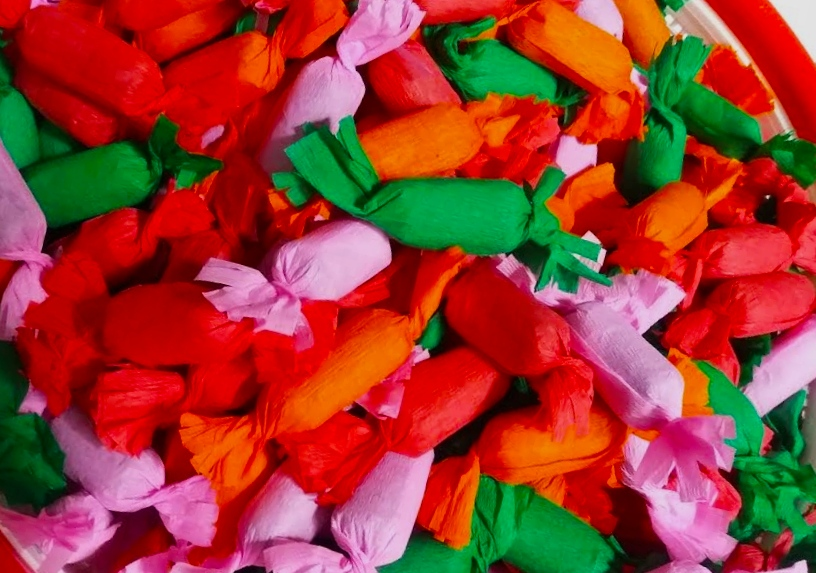
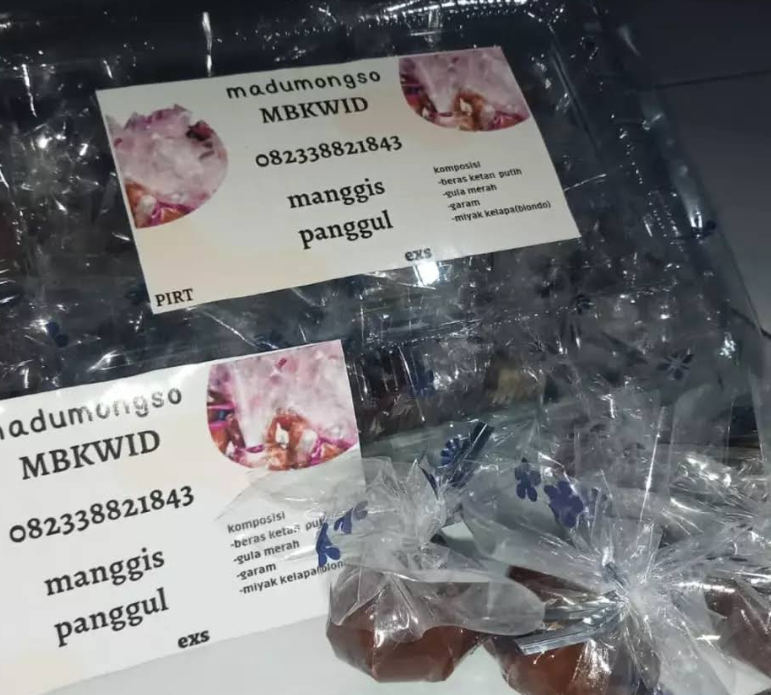

Rasa Tempo Dulu Trenggalek
Manis • Gurih • Tradisional
Manis • Gurih • Tradisional

Madu Mongso adalah manisan tradisional khas Trenggalek yang terbuat dari ketan hitam fermentasi, gula kelapa, dan santan. Rasanya legit, manis, serta meninggalkan sensasi nostalgia rasa tempo dulu.
Madu Mongso berasal dari tradisi masyarakat Jawa Timur, terutama Trenggalek, yang telah diwariskan turun-temurun. Nama “Madu Mongso” sendiri bermakna manis seperti madu, dengan tekstur lembut dan aroma khas dari hasil fermentasi ketan hitam. Keunikannya terletak pada proses pengolahannya yang memadukan rasa manis alami dengan aroma gurih santan yang menggugah selera.
Biar tetap legit dan tidak mudah basi, simpan di tempat sejuk atau kulkas.
Rasa manis dan aroma santannya makin terasa kalau disajikan dingin.
Paduan rasa manis Madu Mongso dan teh pahit membuat cita rasanya seimbang.
Jadi suguhan khas yang menggoda di meja tamu setiap momen spesial.
Ingin membeli Madu Mongso langsung dari sumbernya? Berikut beberapa lokasi toko oleh-oleh terpercaya di Trenggalek.

RT.01/RW.01, Manggis, Kec. Panggul, Kabupaten Trenggalek, Jawa Timur 66364
Hubungi via WhatsApp